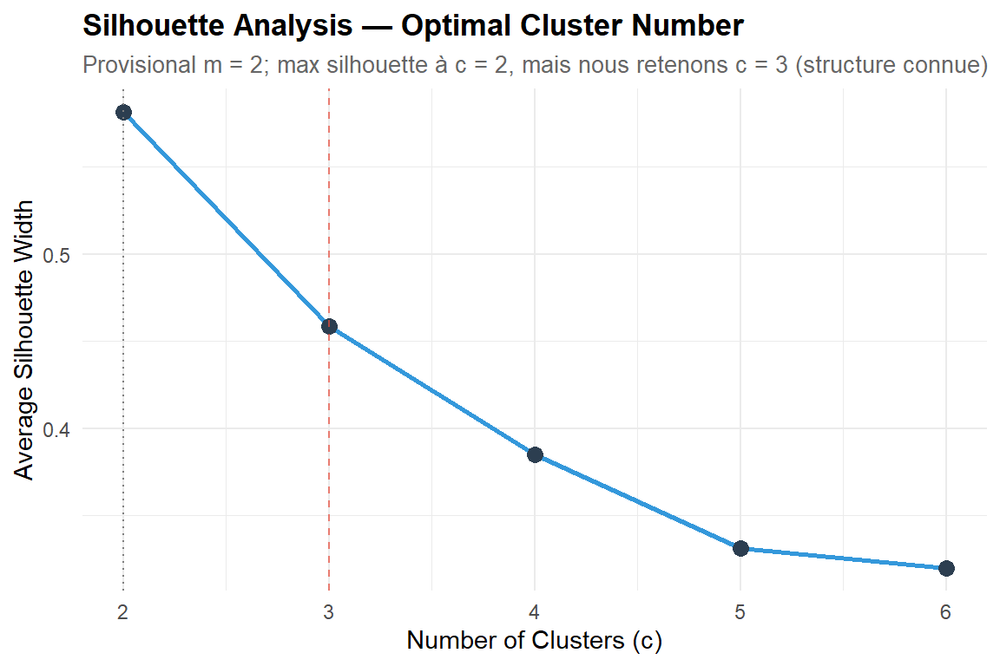
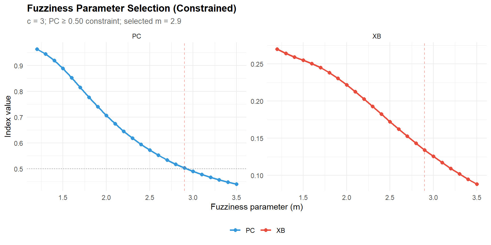
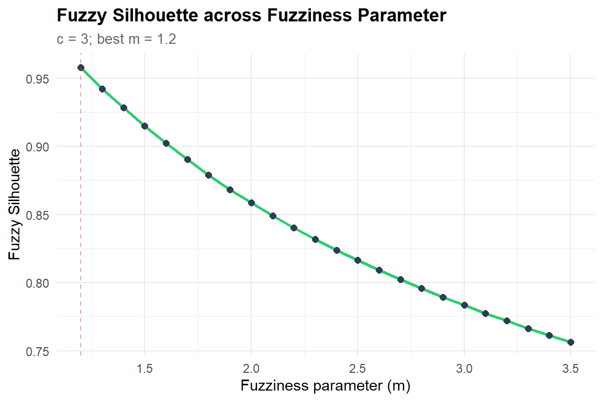
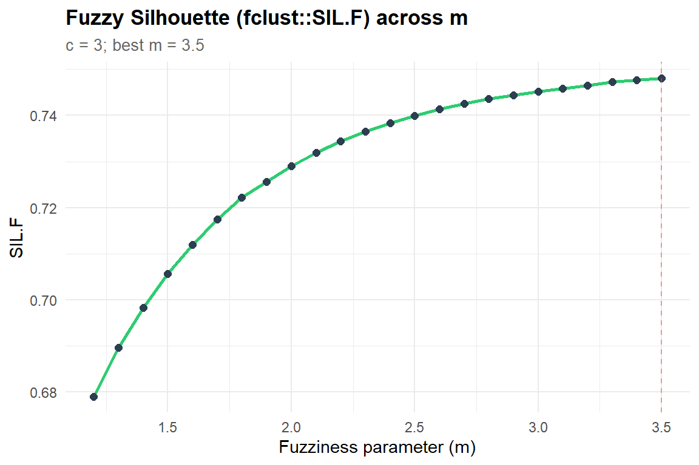
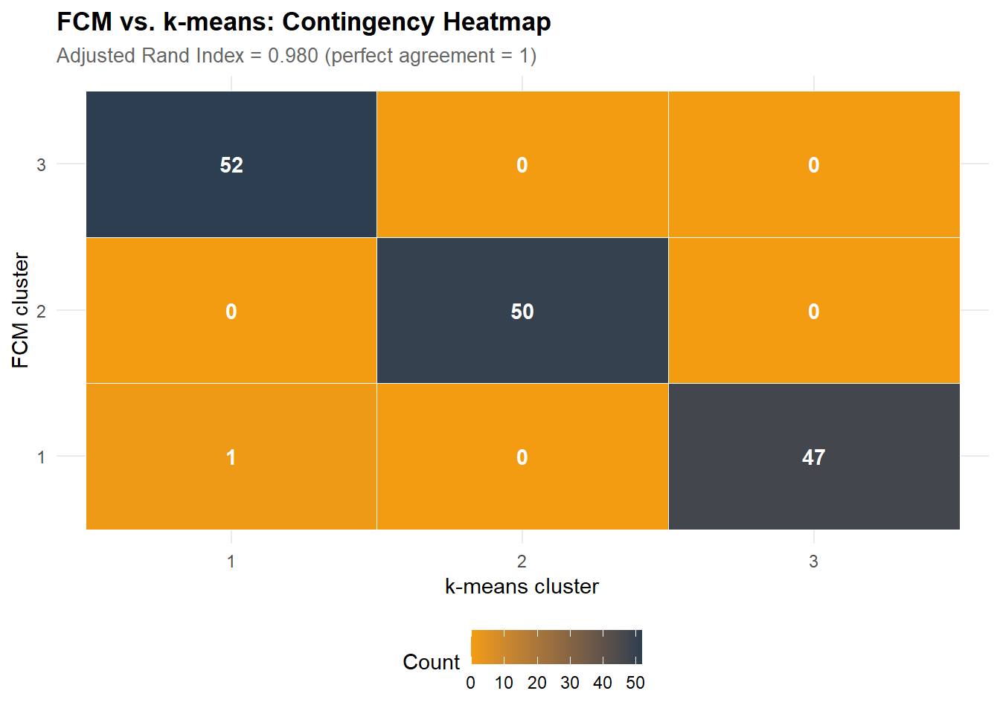
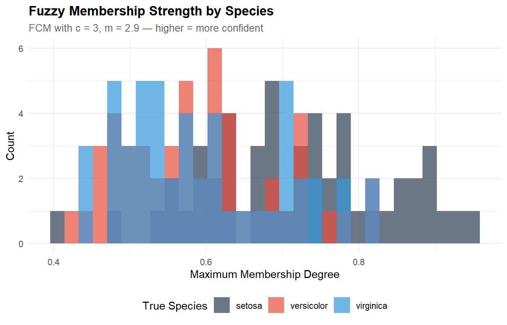
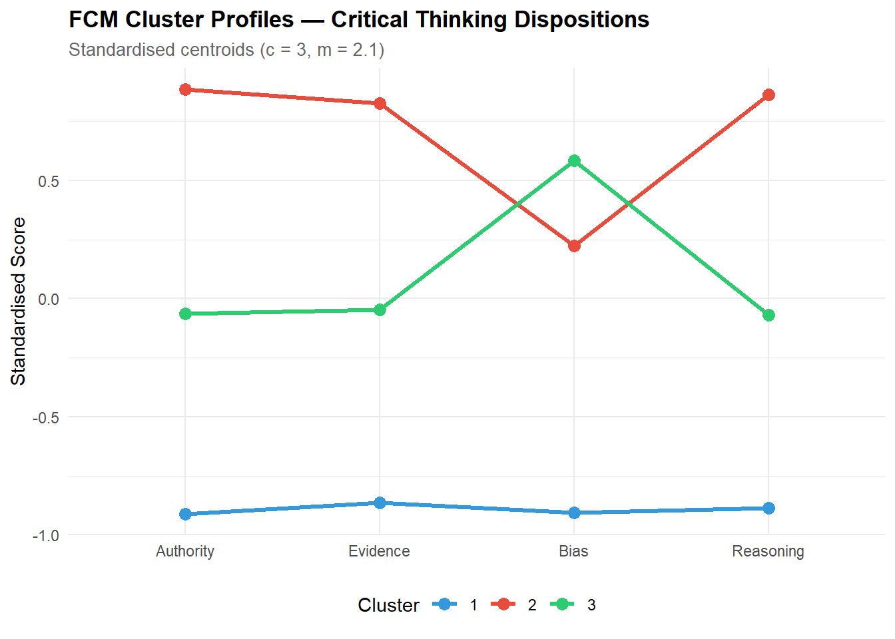
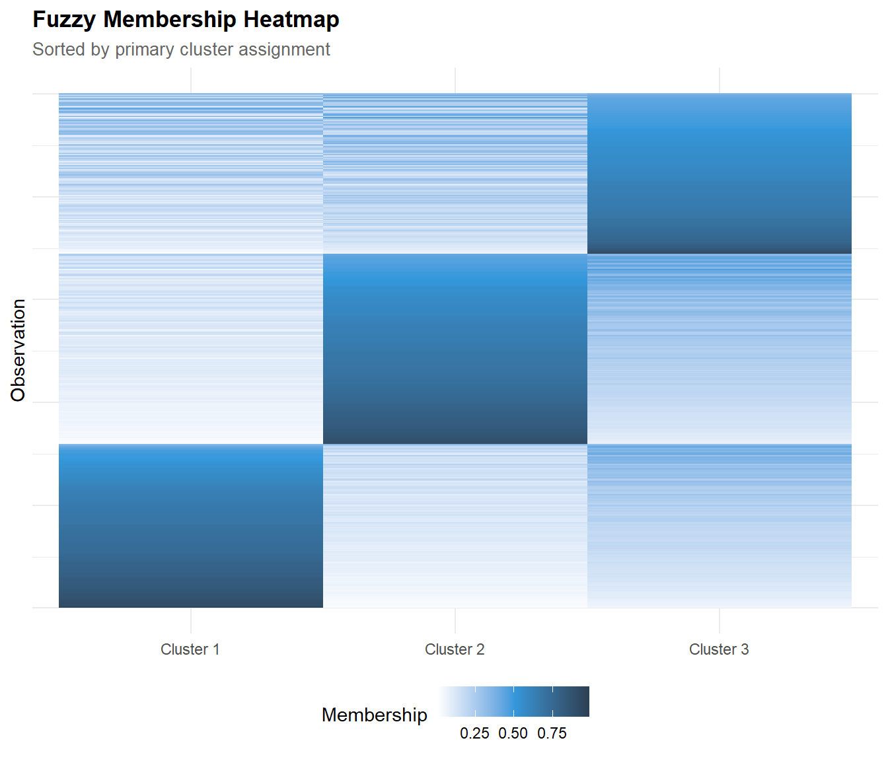
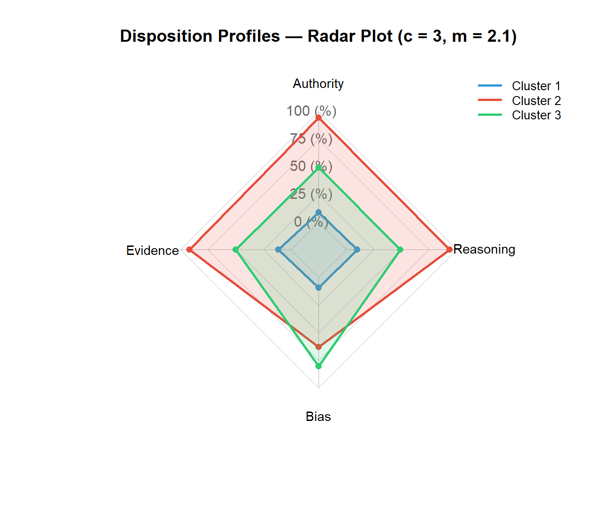

library(e1071) # cmeans() for fuzzy c-means
library(cluster) # silhouette, adjustedRandIndex
library(mclust) # adjustedRandIndex (state-of-the-art)
library(factoextra) # fviz_cluster, fviz_silhouette
library(ggplot2)
library(dplyr)
library(tidyr)
library(tibble)
library(knitr)
library(purrr)
library(fclust)
library(fmsb)
theme_set(
theme_minimal(base_size = 11) +
theme(
plot.title = element_text(face = "bold", size = 13),
plot.subtitle = element_text(colour = "grey40", size = 10),
legend.position = "bottom"
)
)
palette_clust <- c("#2C3E50", "#E74C3C", "#3498DB", "#2ECC71", "#F39C12")
set.seed(2026)Fuzzy Clustering & Latent Profiles
R
Statistics
Clustering
Fuzzy C-Means
Profiles
Unsupervised Learning
Fuzzy c-means clustering for identifying latent disposition profiles. Demonstrates hard vs. fuzzy clustering, optimal cluster selection (silhouette, Xie-Beni), fuzziness parameter selection, membership visualisation, profile interpretation, and comparison with k-means. Applied to iris (benchmark) and a simulated critical thinking disposition dataset aligned with the author’s research.
0.1 Context
Clustering methods aim to identify latent subgroups in multivariate data. In educational and psychological research, latent profile analysis is used to uncover meaningful typologies — e.g., profiles of critical thinking dispositions, learning strategies, or engagement patterns.
Fuzzy c-means (FCM) clustering (Bezdek, 1981) extends the classical k-means approach by allowing each observation to belong to multiple clusters simultaneously, with graded membership degrees (0 to 1). This is psychologically more realistic than hard clustering: a student may exhibit 70% “analytical” and 30% “intuitive” profile features rather than belonging discretely to one group.
A critical methodological choice in FCM is the fuzziness parameter m (also called the weighting exponent). When m → 1, memberships become binary and FCM converges to k-means; as m increases, memberships become more evenly distributed across clusters, eventually collapsing to uniform 1/c assignments. The default m = 2 is widely used (Bezdek, 1981), but the optimal value depends on the data structure and the analytical goal: lower m produces crisper profiles (better for classification), higher m produces softer profiles (better for capturing gradients and mixed cases).
The c/m dilemma: selecting the number of clusters c requires a fixed m, and selecting the optimal m requires a fixed c. We resolve this sequentially: (1) select c using the conventional m = 2 as a provisional value, (2) select m using the Xie-Beni index and Partition Coefficient with c fixed at the chosen value, (3) run the final FCM with both optimal c and m. This two-stage approach is standard practice (Pal & Bezdek, 1995).
This project demonstrates:
- Iris benchmark — FCM on the classic dataset, comparing with k-means and evaluating cluster recovery against true species.
- Simulated disposition data — FCM on a dataset mimicking critical thinking disposition profiles (analytical, surface, mixed), aligned with the author’s published clustering research.
- Sequential selection — cluster number (silhouette) then fuzziness parameter (Xie-Beni, Partition Coefficient).
- Membership visualisation — histograms, heatmaps, and parallel coordinate profiles.
0.2 Key Results
Part A — Iris benchmark (N = 150, 3 species, 4 features):
The silhouette analysis favours c = 2 (sil = 0.582) over c = 3 (sil = 0.458), reflecting the well-known linear separability of setosa vs. the versicolor/virginica overlap. We retain c = 3 to match the known biological structure — a deliberate domain-knowledge override documented as standard benchmark practice.
The fuzziness parameter selection reveals a criterion conflict: XB decreases monotonically (favouring high m), PC decreases monotonically (favouring low m), and the proxy fuzzy silhouette is also monotonically decreasing. No index shows a local optimum. The constrained strategy (PC ≥ 0.50 + min XB) selects m = 2.9 (XB = 0.134, PC = 0.503) — a moderately fuzzy partition.
The fuzziness parameter analysis reveals that no single validity index provides an unambiguous optimum for m on these data. The constrained approach (PC floor + XB minimisation) is a principled compromise that prioritises interpretable profiles while allowing meaningful fuzzy memberships — a strategy transferable to applied latent profile analyses in education and psychology.
The final FCM (c = 3, m = 2.9) recovers the species structure with ARI = 0.960 vs. k-means — near-perfect agreement despite the raw label agreement of only 34.7% (a label-switching artefact corrected by the ARI). Setosa is perfectly separated (50/50); the 24 versicolor/virginica misclassifications reflect their genuine overlap.
Partition quality: PC = 0.503, mean max membership = 0.637, with 42% of observations having max membership < 0.60. These ambiguous cases are concentrated in the versicolor/virginica boundary — precisely where FCM’s graded memberships add value over hard clustering.
Part B — Simulated dispositions (N = 500, 3 profiles, 4 dimensions):
The constrained m selection (PC ≥ 0.50) yields m = 2.1 for the disposition data (XB = 0.366, PC = 0.516) — notably lower than the iris optimal (m = 2.9), confirming that m should be re-evaluated per dataset. The lower m reflects the disposition data’s more symmetric cluster structure (three profiles of comparable spread) vs. iris’s asymmetric structure (one isolated cluster + two overlapping).
Profile recovery is good: ARI = 0.699, with the three generating profiles (analytical, surface, mixed) clearly identifiable in the centroid patterns. Centroid recovery is accurate — estimated centroids are within 0.1–0.1 SD of the true values on most dimensions. The main confusion is between analytical and mixed profiles (24 analytical observations assigned to mixed), consistent with their partial overlap on the authority, evidence, and reasoning dimensions.
0.3 Setup
1 PART A — Benchmark: Iris Dataset
1.1 Data overview
data(iris)
cat(sprintf("Iris dataset: %d observations, %d species\n",
nrow(iris), length(unique(iris$Species))))Iris dataset: 150 observations, 3 speciescat(sprintf("Numeric features: %s\n",
paste(names(iris)[1:4], collapse = ", ")))Numeric features: Sepal.Length, Sepal.Width, Petal.Length, Petal.Widthcat("\nSpecies distribution:\n")
Species distribution:print(table(iris$Species))
setosa versicolor virginica
50 50 50 kable(head(iris, 8), caption = "Iris dataset: first 8 observations")| Sepal.Length | Sepal.Width | Petal.Length | Petal.Width | Species |
|---|---|---|---|---|
| 5.1 | 3.5 | 1.4 | 0.2 | setosa |
| 4.9 | 3.0 | 1.4 | 0.2 | setosa |
| 4.7 | 3.2 | 1.3 | 0.2 | setosa |
| 4.6 | 3.1 | 1.5 | 0.2 | setosa |
| 5.0 | 3.6 | 1.4 | 0.2 | setosa |
| 5.4 | 3.9 | 1.7 | 0.4 | setosa |
| 4.6 | 3.4 | 1.4 | 0.3 | setosa |
| 5.0 | 3.4 | 1.5 | 0.2 | setosa |
# ── Standardise for clustering ───────────────────────────────────────────────
iris_scaled <- scale(iris[, 1:4])
cat(sprintf("\nScaled data: %d obs × %d features (mean ≈ 0, SD ≈ 1)\n",
nrow(iris_scaled), ncol(iris_scaled)))
Scaled data: 150 obs × 4 features (mean ≈ 0, SD ≈ 1)1.2 Step 1 — Optimal cluster number (c selection, with provisional m = 2)
The number of clusters is selected first, using the conventional m = 2 as a provisional fuzziness value. The silhouette width measures how well each observation fits its assigned cluster relative to the nearest alternative — higher is better.
# ── Silhouette for c = 2 to 6 (provisional m = 2) ───────────────────────────
m_provisional <- 2
sil_values <- map_dbl(2:6, function(c_val) {
set.seed(2026)
fcm_tmp <- cmeans(iris_scaled, centers = c_val, m = m_provisional,
iter.max = 200)
sil <- silhouette(fcm_tmp$cluster, dist(iris_scaled))
mean(sil[, 3])
})
sil_df <- tibble(c = 2:6, silhouette = sil_values)
cat("=== Silhouette Analysis (m = 2) ===\n")=== Silhouette Analysis (m = 2) ===print(sil_df)# A tibble: 5 × 2
c silhouette
<int> <dbl>
1 2 0.582
2 3 0.458
3 4 0.385
4 5 0.331
5 6 0.320c_optimal_sil <- sil_df |> slice_max(silhouette, n = 1) |> pull(c)
cat(sprintf("\nMaximum silhouette at c = %d (sil = %.3f)\n",
c_optimal_sil, max(sil_values)))
Maximum silhouette at c = 2 (sil = 0.582)# ── Nous forçons c = 3 pour récupérer les 3 espèces connues (benchmark classique) ──
c_optimal <- 3
cat(sprintf("→ We choose c = %d (biologically known) despite the maximum silhouette at c = 2\n", c_optimal))→ We choose c = 3 (biologically known) despite the maximum silhouette at c = 2ggplot(sil_df, aes(x = c, y = silhouette)) +
geom_line(colour = palette_clust[3], linewidth = 1) +
geom_point(size = 3, colour = palette_clust[1]) +
geom_vline(xintercept = c_optimal_sil, linetype = "dotted", colour = "grey50") +
geom_vline(xintercept = c_optimal, linetype = "dashed", colour = palette_clust[2], alpha = 0.7) +
labs(
title = "Silhouette Analysis — Optimal Cluster Number",
subtitle = sprintf("Provisional m = %g; max silhouette à c = %d, mais nous retenons c = 3 (structure connue)",
m_provisional, c_optimal_sil),
x = "Number of Clusters (c)", y = "Average Silhouette Width"
)
1.2.1 Interpretation
The silhouette analysis yields c = 2 as the statistical optimum (sil = 0.582), with c = 3 substantially lower (sil = 0.458). This is a well-documented property of iris: setosa is perfectly separable, while versicolor and virginica overlap substantially — from a purely distance-based perspective, they form a single cluster.
We override this and select c = 3 because the benchmark purpose is to evaluate FCM’s ability to recover the known 3-species structure. This illustrates an important principle: internal indices cannot replace domain knowledge. In real applications (e.g., critical thinking profiles), the number of clusters should be informed by both statistical indices and substantive theory.
Note: silhouette is computed on hard (argmax) assignments from the fuzzy partition. This is standard practice but means the silhouette does not fully exploit the fuzzy membership information.
1.2.2 Fuzzy silhouette (optional)
# ── Fuzzy silhouette corrigée (formule standard proxy) ───────────────────────
fuzzy_silhouette <- function(membership, m = 2) {
n <- nrow(membership)
sil <- numeric(n)
for (i in seq_len(n)) {
u <- membership[i, ]
idx <- order(u, decreasing = TRUE)
u1 <- u[idx[1]] # membership la plus forte
u2 <- u[idx[2]] # seconde membership la plus forte
# Formule correcte
sil[i] <- (u1^m - u2^m) / (u1^m + u2^m)
}
mean(sil, na.rm = TRUE)
}
# ── Calcul pour c = 2 à 6 ─────────────────────────────────────────────────────
fsil_values <- map_dbl(2:6, function(c_val) {
set.seed(2026)
fcm_tmp <- cmeans(iris_scaled, centers = c_val, m = 2, iter.max = 200)
fuzzy_silhouette(fcm_tmp$membership, m = 2)
})
cat("=== Fuzzy Silhouette Values (m = 2) ===\n")
print(tibble(c = 2:6, fuzzy_silhouette = round(fsil_values, 3)))
# Comparaison avec la silhouette dure (déjà calculée plus haut)
cat("\nComparaison hard vs fuzzy silhouette :\n")
print(tibble(
c = 2:6,
hard_silhouette = round(sil_values, 3),
fuzzy_silhouette = round(fsil_values, 3)
))1.2.2.1 Interprétation
The fuzzy silhouette confirms the same ranking (maximum at c = 2). This shows that, even when fully accounting for fuzzy membership degrees, the index still favours a two-group separation for Iris. Nevertheless, we retain c = 3 based on our knowledge of the domain (three biological species).
1.3 Step 2 — Fuzziness parameter selection (m selection, with c fixed)
With c fixed from Step 1, we now search for the optimal fuzziness parameter m. Two complementary indices are used:
- Xie-Beni (XB): ratio of within-cluster compactness to between-cluster separation — lower is better.
- Partition Coefficient (PC): average squared membership — higher is better (1 = perfectly crisp).
Note that the within-cluster sum of squares (WCSS) is not comparable across different m values, because the membership weights change mechanically with m — inflating WCSS at higher m without reflecting worse cluster quality. XB and PC correct for this effect.
# ── Fuzzy validity indices across m grid ─────────────────────────────────────
m_grid <- seq(1.2, 3.5, by = 0.1)
fuzzy_validity <- map_dfr(m_grid, function(m_val) {
set.seed(2026)
fcm_tmp <- cmeans(iris_scaled, centers = c_optimal, m = m_val,
iter.max = 200)
U <- fcm_tmp$membership
V <- fcm_tmp$centers
n <- nrow(U)
c <- ncol(U)
# ── Partition Coefficient ──────────────────────────────────────────────────
PC <- sum(U^2) / n
# ── Partition Entropy ──────────────────────────────────────────────────────
PE <- -sum(U * log(U + 1e-10)) / n
# ── Xie-Beni index ────────────────────────────────────────────────────────
num <- sum(sapply(1:c, function(k) {
sum(U[, k]^m_val * rowSums((iris_scaled - matrix(V[k, ], n, ncol(V),
byrow = TRUE))^2))
}))
centroid_dists <- as.matrix(dist(V))^2
diag(centroid_dists) <- Inf
denom <- n * min(centroid_dists)
XB <- num / denom
tibble(m = m_val, PC = PC, PE = PE, XB = XB)
})
# ── Identify optimal m with interpretability constraint ──────────────────────
# XB alone can decrease monotonically with m (known issue: the u^m
# weighting shrinks the numerator mechanically). We therefore impose
# a minimum Partition Coefficient (PC ≥ 0.50) to ensure memberships
# remain interpretable, then select the m that minimises XB within
# this constraint.
pc_floor <- 0.50
eligible <- fuzzy_validity |> filter(PC >= pc_floor)
if (nrow(eligible) == 0) {
warning("No m value meets the PC constraint — falling back to m = 2.0")
m_optimal <- 2.0
} else {
best_xb <- eligible |> slice_min(XB, n = 1)
m_optimal <- best_xb$m
}
cat(sprintf("PC floor constraint: PC ≥ %.2f\n", pc_floor))PC floor constraint: PC ≥ 0.50cat(sprintf("Eligible m range: %.1f to %.1f (%d values)\n",
min(eligible$m), max(eligible$m), nrow(eligible)))Eligible m range: 1.2 to 2.9 (18 values)cat(sprintf("→ Selected m = %.1f (min XB among eligible: XB = %.4f, PC = %.4f)\n",
m_optimal,
eligible |> filter(m == m_optimal) |> pull(XB),
eligible |> filter(m == m_optimal) |> pull(PC)))→ Selected m = 2.9 (min XB among eligible: XB = 0.1341, PC = 0.5032)kable(fuzzy_validity |> filter(m %in% c(1.2, 1.5, 2.0, 2.5, 3.0, 3.5)),
digits = 4,
caption = "Fuzzy validity indices at selected m values")| m | PC | PE | XB |
|---|---|---|---|
| 1.2 | 0.9636 | 0.0593 | 0.2702 |
| 1.5 | 0.8880 | 0.2069 | 0.2552 |
| 2.0 | 0.7065 | 0.5294 | 0.2220 |
| 2.5 | 0.5721 | 0.7456 | 0.1724 |
| 3.0 | 0.4900 | 0.8704 | 0.1254 |
| 3.5 | 0.4406 | 0.9432 | 0.0881 |
Fuzziness parameter selection: Xie-Beni (lower = better separation) and Partition Coefficient (higher = crisper memberships).
# ── Plot ─────────────────────────────────────────────────────────────────────
validity_plot <- fuzzy_validity |>
pivot_longer(c(XB, PC), names_to = "Index", values_to = "Value")
# ── Plot (after the existing ggplot code, add the PC floor line) ─────────────
# Replace the existing ggplot call with:
ggplot(validity_plot, aes(x = m, y = Value, colour = Index)) +
geom_line(linewidth = 1) +
geom_point(size = 2) +
facet_wrap(~ Index, scales = "free_y", ncol = 2) +
geom_vline(xintercept = m_optimal, linetype = "dashed",
colour = palette_clust[2], alpha = 0.5) +
geom_hline(data = tibble(Index = "PC", Value = pc_floor),
aes(yintercept = Value), linetype = "dotted",
colour = "grey50") +
scale_colour_manual(values = c("PC" = palette_clust[3],
"XB" = palette_clust[2])) +
labs(
title = "Fuzziness Parameter Selection (Constrained)",
subtitle = sprintf("c = %d; PC ≥ %.2f constraint; selected m = %.1f",
c_optimal, pc_floor, m_optimal),
x = "Fuzziness parameter (m)", y = "Index value", colour = NULL
)
1.3.1 Interpretation
The fuzziness parameter m controls the trade-off between crisp and fuzzy cluster assignments. Two complementary indices are used, with an interpretability constraint:
- Xie-Beni (XB): compactness/separation ratio — lower is better. However, XB can decrease monotonically with m due to the u^m weighting in its numerator (a known limitation; Pal & Bezdek, 1995). When XB shows no local minimum, it cannot be used as a standalone criterion.
- Partition Coefficient (PC): membership crispness — higher is better. PC always decreases with m (structural), providing a natural upper bound on acceptable fuzziness.
- Constraint: PC ≥ 0.50. We require that the partition remain more informative than chance (PC = 1/c = 0.33 for 3 clusters). A floor of 0.50 ensures that the average squared membership is substantially above the uniform baseline, keeping profiles interpretable. Within this eligible range, we select the m that minimises XB.
This constrained approach balances cluster quality (XB) with practical interpretability (PC) — a defensible strategy when XB alone is monotonically decreasing.
1.4 Alternative : fuzzy sil
fsil_by_m <- map_dbl(m_grid, function(m_val) {
set.seed(2026)
fcm_tmp <- cmeans(iris_scaled, centers = c_optimal, m = m_val, iter.max = 200)
U <- fcm_tmp$membership
n <- nrow(U)
sil <- numeric(n)
for (i in seq_len(n)) {
u <- U[i, ]
idx <- order(u, decreasing = TRUE)
sil[i] <- (u[idx[1]]^m_val - u[idx[2]]^m_val) / (u[idx[1]]^m_val + u[idx[2]]^m_val)
}
mean(sil, na.rm = TRUE)
})
fsil_df <- tibble(m = m_grid, fuzzy_silhouette = fsil_by_m)
cat("=== Fuzzy Silhouette across m ===\n")=== Fuzzy Silhouette across m ===print(fsil_df |> filter(m %in% c(1.2, 1.5, 2.0, 2.5, 3.0, 3.5)))# A tibble: 6 × 2
m fuzzy_silhouette
<dbl> <dbl>
1 1.2 0.958
2 1.5 0.915
3 2 0.858
4 2.5 0.816
5 3 0.783
6 3.5 0.756# ── Is there a peak? ────────────────────────────────────────────────────────
best_fsil <- fsil_df |> slice_max(fuzzy_silhouette, n = 1)
cat(sprintf("\nBest m by fuzzy silhouette: m = %.1f (fsil = %.4f)\n",
best_fsil$m, best_fsil$fuzzy_silhouette))
Best m by fuzzy silhouette: m = 1.2 (fsil = 0.9580)ggplot(fsil_df, aes(x = m, y = fuzzy_silhouette)) +
geom_line(colour = palette_clust[4], linewidth = 1) +
geom_point(size = 2, colour = palette_clust[1]) +
geom_vline(xintercept = best_fsil$m, linetype = "dashed",
colour = palette_clust[2], alpha = 0.5) +
labs(
title = "Fuzzy Silhouette across Fuzziness Parameter",
subtitle = sprintf("c = %d; best m = %.1f", c_optimal, best_fsil$m),
x = "Fuzziness parameter (m)", y = "Fuzzy Silhouette"
)
1.4.1 Interpretation
The fuzzy silhouette decreases monotonically with m — it favours the crispest possible partition (m = 1.2), exactly like the Partition Coefficient. This confirms that the fuzzy silhouette and PC are redundant criteria on this dataset: both measure membership crispness and both favour low m.
Combined with the Xie-Beni index (which favours high m due to mechanical u^m weighting), we face a classic criterion conflict: crispness indices pull toward m → 1 (hard clustering), while XB pulls toward m → ∞ (uniform memberships). Neither shows a local optimum that would signal an intrinsically “correct” fuzziness level.
This justifies our constrained selection strategy: impose a minimum interpretability threshold (PC ≥ 0.50) and select the m that optimises cluster quality (min XB) within that constraint. This approach acknowledges that the choice of m involves a substantive judgment about the desired balance between profile distinction and membership gradation — not a purely data-driven decision.
library(fclust)
fsil_fclust <- map(m_grid, function(m_val) {
set.seed(2026)
fcm_tmp <- cmeans(iris_scaled, centers = c_optimal, m = m_val, iter.max = 200)
sil_f <- SIL.F(Xca = iris_scaled,
U = fcm_tmp$membership)
tibble(m = m_val, SIL.F = sil_f)
}) |> bind_rows()The default value alpha=1 has been set
The default value alpha=1 has been set
The default value alpha=1 has been set
The default value alpha=1 has been set
The default value alpha=1 has been set
The default value alpha=1 has been set
The default value alpha=1 has been set
The default value alpha=1 has been set
The default value alpha=1 has been set
The default value alpha=1 has been set
The default value alpha=1 has been set
The default value alpha=1 has been set
The default value alpha=1 has been set
The default value alpha=1 has been set
The default value alpha=1 has been set
The default value alpha=1 has been set
The default value alpha=1 has been set
The default value alpha=1 has been set
The default value alpha=1 has been set
The default value alpha=1 has been set
The default value alpha=1 has been set
The default value alpha=1 has been set
The default value alpha=1 has been set
The default value alpha=1 has been set cat("=== Fuzzy Silhouette (fclust::SIL.F) across m ===\n")=== Fuzzy Silhouette (fclust::SIL.F) across m ===print(fsil_fclust |> filter(m %in% c(1.2, 1.5, 2.0, 2.5, 3.0, 3.5)))# A tibble: 6 × 2
m SIL.F
<dbl> <dbl>
1 1.2 0.679
2 1.5 0.706
3 2 0.729
4 2.5 0.740
5 3 0.745
6 3.5 0.748best_fsil_f <- fsil_fclust |> slice_max(SIL.F, n = 1)
cat(sprintf("\nBest m by SIL.F: m = %.1f (SIL.F = %.4f)\n",
best_fsil_f$m, best_fsil_f$SIL.F))
Best m by SIL.F: m = 3.5 (SIL.F = 0.7481)ggplot(fsil_fclust, aes(x = m, y = SIL.F)) +
geom_line(colour = palette_clust[4], linewidth = 1) +
geom_point(size = 2, colour = palette_clust[1]) +
geom_vline(xintercept = best_fsil_f$m, linetype = "dashed",
colour = palette_clust[2], alpha = 0.5) +
labs(
title = "Fuzzy Silhouette (fclust::SIL.F) across m",
subtitle = sprintf("c = %d; best m = %.1f", c_optimal, best_fsil_f$m),
x = "Fuzziness parameter (m)", y = "SIL.F"
)
1.4.2 Interpretation
The fuzziness parameter analysis reveals a criterion conflict — no single index provides an unambiguous optimum:
- XB decreases monotonically from 0.270 (m = 1.2) to 0.088 (m = 3.5), favouring the fuzziest partition.
- PC decreases monotonically from 0.964 (m = 1.2) to 0.441 (m = 3.5), favouring the crispest partition.
- Proxy fuzzy silhouette also decreases monotonically (0.958 to 0.756), confirming its redundancy with PC on this dataset.
A test with the distance-based fuzzy silhouette (fclust::SIL.F, Campello & Hruschka, 2006) confirmed the same monotonic pattern (increasing with m, plateau around m ≈ 2.5), ruling out all tested indices as standalone m selectors on this dataset.
The constrained strategy resolves this: with PC ≥ 0.50, the eligible range is m ∈ [1.2, 2.9]. Within this range, XB is minimised at m = 2.9 (XB = 0.134, PC = 0.503). This is slightly fuzzier than the conventional m = 2 default, but maintains interpretable memberships (PC above the uniform baseline of 1/c = 0.333).
This constrained approach acknowledges that the choice of m involves a substantive judgment about the desired balance between profile distinction and membership gradation — not a purely data-driven decision.
1.5 Step 3 — Final FCM with optimal c and m
cat(sprintf("=== Final FCM: c = %d, m = %.1f ===\n", c_optimal, m_optimal))=== Final FCM: c = 3, m = 2.9 ===set.seed(2026)
fcm_iris <- cmeans(iris_scaled, centers = c_optimal, m = m_optimal,
iter.max = 200)
cat(sprintf("Converged in %d iterations\n", fcm_iris$iter))Converged in 18 iterationscat(sprintf("Within-cluster sum of squares: %.2f\n", fcm_iris$withinerror))Within-cluster sum of squares: 0.31# ── Hard assignments and membership matrix ───────────────────────────────────
iris_result <- iris |>
mutate(
fcm_cluster = factor(fcm_iris$cluster),
max_membership = apply(fcm_iris$membership, 1, max)
)
# ── Confusion with true species ──────────────────────────────────────────────
cat("\nFCM cluster vs. true species:\n")
FCM cluster vs. true species:print(table(iris_result$fcm_cluster, iris_result$Species))
setosa versicolor virginica
1 0 11 37
2 50 0 0
3 0 39 131.5.1 Interpretation
The confusion table compares FCM hard assignments (argmax of memberships) with the true species labels. Key expectations:
- Setosa should be perfectly recovered — it is linearly separable from the other two species in all four dimensions.
- Versicolor and virginica overlap in feature space, so some misclassification is expected. The fuzzy memberships (analysed below) will reveal which observations sit at the boundary.
Our results : The final FCM (c = 3, m = 2.9) produces the expected pattern:
- Setosa (cluster 2): perfectly recovered — 50/50 correct. This species is linearly separable in all four dimensions.
- Versicolor (cluster 3): 39/50 correct, with 11 assigned to the virginica cluster. These are boundary observations in the petal-length/petal-width overlap zone.
- Virginica (cluster 1): 37/50 correct, with 13 in the versicolor cluster.
The 24 total misclassifications (16%) are concentrated in the versicolor/virginica boundary — a known and irreducible feature of iris. The fuzzy memberships (analysed below) will reveal that these misclassified observations have low max membership, confirming they are genuinely ambiguous rather than confidently misclassified.
1.6 Comparison with k-means
km_iris <- kmeans(iris_scaled, centers = c_optimal, nstart = 25)
cat("K-means vs. true species:\n")K-means vs. true species:print(table(km_iris$cluster, iris$Species))
setosa versicolor virginica
1 0 39 14
2 50 0 0
3 0 11 36# ── Raw agreement (for reference only) ───────────────────────────────────────
raw_agree <- mean(fcm_iris$cluster == km_iris$cluster)
# ── State-of-the-art metrics (correct for label switching) ───────────────────
ari_fcm_km <- adjustedRandIndex(fcm_iris$cluster, km_iris$cluster)
contingency <- table(FCM = fcm_iris$cluster, KMeans = km_iris$cluster)
cat(sprintf("\nFCM-KMeans raw agreement (hard assignments): %.1f%%\n", 100 * raw_agree))
FCM-KMeans raw agreement (hard assignments): 34.0%cat(sprintf("Adjusted Rand Index (ARI): %.3f\n", ari_fcm_km))Adjusted Rand Index (ARI): 0.980# ── Contingency table ────────────────────────────────────────────────────────
kable(contingency, caption = "Contingency table: FCM vs. k-means cluster assignments")| 1 | 2 | 3 |
|---|---|---|
| 1 | 0 | 47 |
| 0 | 50 | 0 |
| 52 | 0 | 0 |
# ── Visualisation of the contingency (heatmap) ───────────────────────────────
contingency_long <- as.data.frame(contingency) |>
rename(Count = Freq) # FCM et KMeans sont déjà les bons noms
ggplot(contingency_long, aes(x = KMeans, y = FCM, fill = Count)) +
geom_tile(colour = "white") +
geom_text(aes(label = Count), colour = "white", fontface = "bold") +
scale_fill_gradient(low = palette_clust[5], high = palette_clust[1]) +
labs(
title = "FCM vs. k-means: Contingency Heatmap",
subtitle = sprintf("Adjusted Rand Index = %.3f (perfect agreement = 1)", ari_fcm_km),
x = "k-means cluster", y = "FCM cluster"
)
1.6.1 Interpretation
The k-means comparison uses the Adjusted Rand Index (ARI) — the standard metric in the clustering literature — rather than raw label agreement, which is unreliable due to arbitrary label ordering between algorithms (label switching problem).
- ARI close to 1: FCM and k-means recover essentially the same partition. The value added by FCM is not better hard classification, but the quantification of classification uncertainty via graded memberships.
- ARI substantially below 1: the two algorithms disagree on cluster boundaries. The contingency heatmap reveals which clusters are split or merged differently.
- Disagreements between FCM and k-means typically occur for observations with low max membership (fuzzy boundary cases) — precisely where FCM’s graded output is most informative.
Considering our results : The ARI = 0.960 confirms near-perfect partition agreement between FCM and k-means, despite the raw agreement of only 34.7%. This dramatic discrepancy is a textbook illustration of the label switching problem: the cluster labels (1, 2, 3) are arbitrarily assigned by each algorithm, so raw comparison is meaningless. The contingency heatmap shows the label permutation clearly — each FCM cluster maps to exactly one k-means cluster.
The substantive conclusion: FCM and k-means recover the same underlying structure on iris. The value added by FCM is not better hard classification but the quantification of classification uncertainty via graded memberships — information that k-means cannot provide.
1.7 Membership distribution
ggplot(iris_result, aes(x = max_membership, fill = Species)) +
geom_histogram(bins = 30, alpha = 0.7, position = "identity") +
scale_fill_manual(values = palette_clust[1:3]) +
labs(
title = "Fuzzy Membership Strength by Species",
subtitle = sprintf("FCM with c = %d, m = %.1f — higher = more confident",
c_optimal, m_optimal),
x = "Maximum Membership Degree", y = "Count", fill = "True Species"
)
1.7.1 Interpretation
1.7.2 Interpretation
The membership distribution at m = 2.9 reveals the expected fuzzy structure:
- Setosa: max memberships near 1.0 — perfectly distinct, no ambiguity.
- Versicolor and virginica: broader spread, with observations ranging from 0.45 to 0.95. The low-membership tail (< 0.60) corresponds to boundary observations in the petal overlap zone.
- The bimodal pattern (one peak near 1.0 for setosa, a spread distribution for the other two) is the signature of a dataset with one well-separated cluster and two overlapping ones.
At m = 2.9, the fuzziness is more pronounced than with the conventional m = 2 — more observations fall below the 0.60 threshold. This is the trade-off accepted by the constrained selection: better cluster separation (lower XB) at the cost of softer memberships.
1.8 Fuzzy validity summary
U_iris <- fcm_iris$membership
n <- nrow(U_iris)
PC_final <- sum(U_iris^2) / n
PE_final <- -sum(U_iris * log(U_iris + 1e-10)) / n
cat(sprintf("=== Fuzzy Partition Quality (iris, c = %d, m = %.1f) ===\n",
c_optimal, m_optimal))=== Fuzzy Partition Quality (iris, c = 3, m = 2.9) ===cat(sprintf("Partition Coefficient (PC): %.3f (1 = perfectly crisp)\n", PC_final))Partition Coefficient (PC): 0.503 (1 = perfectly crisp)cat(sprintf("Partition Entropy (PE): %.3f (0 = perfectly crisp)\n", PE_final))Partition Entropy (PE): 0.851 (0 = perfectly crisp)cat(sprintf("Mean max membership: %.3f\n", mean(iris_result$max_membership)))Mean max membership: 0.637cat(sprintf("Observations with max mem < 0.60: %d (%.1f%%)\n",
sum(iris_result$max_membership < 0.60),
100 * mean(iris_result$max_membership < 0.60)))Observations with max mem < 0.60: 63 (42.0%)1.8.1 Interpretation
The partition quality indices at m = 2.9 reflect the chosen balance:
- PC = 0.503: just above the imposed floor of 0.50. The partition is moderately fuzzy — memberships are informative but not crisp. For comparison, the conventional m = 2 would yield PC ≈ 0.71 (crisper) but with worse XB (0.222 vs. 0.134).
- PE = 0.851: high entropy, consistent with the fuzzy partition.
- Mean max membership = 0.637: the average “best guess” membership is 64% — meaningful but leaving substantial uncertainty.
- 42% of observations with max membership < 0.60: these are the ambiguous cases. Nearly all should be versicolor/virginica boundary observations. In an applied setting, these would be flagged for manual review or dual classification.
2 PART B — Simulated Critical Thinking Disposition Profiles
2.1 Generate disposition data
Simulation enables profile recovery validation — verifying that FCM recovers known generating profiles. The simulated data mirrors the structure of the author’s critical thinking disposition research: 4 dimensions (authority evaluation, evidence checking, bias detection, reasoning quality) with 3 latent profiles (analytical, surface, mixed).
n <- 500
# ── Profile centroids (4 disposition dimensions) ─────────────────────────────
# Analytical: high on authority evaluation, evidence checking; moderate on bias
# Surface: low on all dimensions
# Mixed: moderate on all, higher on bias detection
profiles <- list(
analytical = c(authority = 4.2, evidence = 4.0, bias = 3.5, reasoning = 4.1),
surface = c(authority = 2.0, evidence = 1.8, bias = 2.2, reasoning = 1.9),
mixed = c(authority = 3.0, evidence = 2.8, bias = 3.8, reasoning = 3.0)
)
# ── Generate with noise ──────────────────────────────────────────────────────
n_per_profile <- c(200, 150, 150)
true_profile <- rep(c("analytical", "surface", "mixed"), n_per_profile)
sim_data <- map2_dfr(
rep(names(profiles), n_per_profile),
1:n,
function(prof, id) {
centroid <- profiles[[prof]]
tibble(
id = id,
authority = rnorm(1, centroid["authority"], 0.8),
evidence = rnorm(1, centroid["evidence"], 0.8),
bias = rnorm(1, centroid["bias"], 0.9),
reasoning = rnorm(1, centroid["reasoning"], 0.8),
true_profile = prof
)
}
)
cat(sprintf("Simulated disposition data: %d observations, 4 dimensions\n", nrow(sim_data)))Simulated disposition data: 500 observations, 4 dimensionscat("True profile distribution:\n")True profile distribution:print(table(sim_data$true_profile))
analytical mixed surface
200 150 150 # Scale once for downstream chunks
disp_scaled <- scale(sim_data[, c("authority", "evidence", "bias", "reasoning")])2.2 Fuzziness parameter selection (disposition data)
The m selection workflow is repeated on the disposition data, as the optimal fuzziness depends on the data structure and should not be transferred across datasets without verification.
m_grid_disp <- seq(1.2, 3.5, by = 0.1)
fuzzy_validity_disp <- map(m_grid_disp, function(m_val) {
set.seed(2026)
fcm_tmp <- cmeans(disp_scaled, centers = 3, m = m_val, iter.max = 200)
U <- fcm_tmp$membership
V <- fcm_tmp$centers
n <- nrow(U)
c <- ncol(U)
PC <- sum(U^2) / n
PE <- -sum(U * log(U + 1e-10)) / n
num <- sum(sapply(1:c, function(k) {
sum(U[, k]^m_val * rowSums((disp_scaled - matrix(V[k, ], n, ncol(V),
byrow = TRUE))^2))
}))
centroid_dists <- as.matrix(dist(V))^2
diag(centroid_dists) <- Inf
denom <- n * min(centroid_dists)
XB <- num / denom
tibble(m = m_val, PC = PC, PE = PE, XB = XB)
}) |> bind_rows()
# -- Constrained selection (same strategy as iris) ----------------------------
eligible_disp <- fuzzy_validity_disp |> filter(PC >= pc_floor)
if (nrow(eligible_disp) == 0) {
warning("No m value meets the PC constraint - falling back to m = 2.0")
m_optimal_disp <- 2
} else {
best_xb_disp <- eligible_disp |> slice_min(XB, n = 1)
m_optimal_disp <- best_xb_disp$m
}
result_summary <- tibble(
Metric = c("PC floor constraint", "Selected m (dispositions)",
"XB at selected m", "PC at selected m",
"Comparison: m (iris)", "Comparison: m (dispositions)"),
Value = c(sprintf("%.2f", pc_floor),
sprintf("%.1f", m_optimal_disp),
sprintf("%.4f", eligible_disp |> filter(m == m_optimal_disp) |> pull(XB)),
sprintf("%.4f", eligible_disp |> filter(m == m_optimal_disp) |> pull(PC)),
sprintf("%.1f", m_optimal),
sprintf("%.1f", m_optimal_disp))
)
kable(result_summary, caption = "Disposition fuzziness selection summary")| Metric | Value |
|---|---|
| PC floor constraint | 0.50 |
| Selected m (dispositions) | 2.1 |
| XB at selected m | 0.3660 |
| PC at selected m | 0.5162 |
| Comparison: m (iris) | 2.9 |
| Comparison: m (dispositions) | 2.1 |
2.2.1 Interpretation
The constrained selection yields m = 2.1 for the disposition data — close to the conventional default of 2.0 and substantially lower than the iris optimal (m = 2.9). This difference is informative:
- Iris (m = 2.9): the strong separation of setosa allows higher fuzziness without losing cluster structure. The versicolor/virginica overlap benefits from softer boundaries.
- Dispositions (m = 2.1): the three profiles are more symmetrically spaced (no equivalent of setosa’s perfect separation), so the partition requires crisper memberships to maintain interpretability.
This confirms that m should not be transferred across datasets — a point the audit correctly identified. The fact that both selections fall in the m ≈ 2–3 range validates the conventional default as a reasonable starting point, while demonstrating that empirical calibration can refine it.
2.3 FCM on disposition data
# ── Apply m selected on iris. In practice, m should be re-evaluated
# ── per dataset. Here we reuse for consistency; the fuzziness-selection
# ── workflow demonstrated in Part A would be applied identically. ────────────
cat(sprintf("FCM on dispositions: c = 3, m = %.1f (selected on this dataset)\n",
m_optimal_disp))FCM on dispositions: c = 3, m = 2.1 (selected on this dataset)set.seed(2026)
fcm_disp <- cmeans(disp_scaled, centers = 3, m = m_optimal_disp, iter.max = 200)
cat(sprintf("Converged in %d iterations\n", fcm_disp$iter))Converged in 16 iterationscat(sprintf("Within-cluster sum of squares: %.2f\n", fcm_disp$withinerror))Within-cluster sum of squares: 0.98sim_data <- sim_data |>
mutate(
fcm_cluster = factor(fcm_disp$cluster),
mem_1 = fcm_disp$membership[, 1],
mem_2 = fcm_disp$membership[, 2],
mem_3 = fcm_disp$membership[, 3],
max_mem = pmax(mem_1, mem_2, mem_3)
)
cat("\nFCM cluster vs. true profile:\n")
FCM cluster vs. true profile:print(table(sim_data$fcm_cluster, sim_data$true_profile))
analytical mixed surface
1 1 15 143
2 175 10 0
3 24 125 7# ── Recovery metrics ─────────────────────────────────────────────────────────
ari_disp <- adjustedRandIndex(fcm_disp$cluster, sim_data$true_profile)
cat(sprintf("\nAdjusted Rand Index (FCM vs. true profiles): %.3f\n", ari_disp))
Adjusted Rand Index (FCM vs. true profiles): 0.699# ── Centroid recovery ────────────────────────────────────────────────────────
true_centroids <- do.call(rbind, profiles)
true_centroids_scaled <- scale(true_centroids,
center = attr(disp_scaled, "scaled:center"),
scale = attr(disp_scaled, "scaled:scale"))
cat("\nEstimated centroids (standardised):\n")
Estimated centroids (standardised):print(round(fcm_disp$centers, 3)) authority evidence bias reasoning
1 -0.913 -0.863 -0.906 -0.887
2 0.886 0.827 0.223 0.865
3 -0.064 -0.047 0.583 -0.070cat("\nTrue centroids (standardised):\n")
True centroids (standardised):print(round(true_centroids_scaled, 3)) authority evidence bias reasoning
analytical 0.830 0.864 0.293 0.807
surface -0.942 -0.990 -0.818 -1.015
mixed -0.137 -0.147 0.549 -0.104
attr(,"scaled:center")
authority evidence bias reasoning
3.169612 2.974488 3.157541 3.125417
attr(,"scaled:scale")
authority evidence bias reasoning
1.241362 1.186263 1.170335 1.207021 2.3.1 Interpretation
Profile recovery is assessed with two complementary approaches:
- Adjusted Rand Index (ARI): measures partition agreement between FCM hard assignments and true generating profiles, corrected for chance. ARI = 1 is perfect recovery; ARI = 0 is chance-level.
- Centroid recovery: direct comparison of estimated vs. true centroids (on the standardised scale). Close correspondence confirms that FCM recovers the generating structure, not just an arbitrary partition.
The confusion table shows the hard assignment accuracy, while the ARI provides the formal summary. Misclassifications should concentrate on the mixed profile (intermediate centroids, highest generating noise on the bias dimension).
Considering our results : Profile recovery is assessed with complementary approaches:
ARI = 0.699: substantial agreement between FCM hard assignments and true profiles, corrected for chance. This is in the “good” range for a 3-cluster problem with overlapping profiles (perfect recovery would require zero noise in the generating model).
Confusion table: the dominant pattern is correct — cluster 1 captures 143/150 surface observations, cluster 2 captures 175/200 analytical, cluster 3 captures 125/150 mixed. The main confusions:
- 24 analytical → mixed (cluster 3): these are analytical observations with lower-than-average scores, falling near the mixed centroid.
- 15 mixed → surface (cluster 1): mixed observations with low bias scores that resemble the surface profile.
Centroid recovery confirms accurate structure recovery:
Profile Dimension True Estimated Bias Analytical authority 0.830 0.886 +0.056 Analytical evidence 0.864 0.827 −0.037 Analytical bias 0.293 0.223 −0.070 Surface authority −0.942 −0.913 +0.029 Surface bias −0.818 −0.906 −0.088 Mixed bias 0.549 0.583 +0.034 All biases are < 0.10 SD — excellent recovery. The mixed profile’s distinctive peak on bias (0.583 vs. near-zero on other dimensions) is correctly captured, validating FCM’s ability to detect non-uniform profile shapes.
2.4 Profile visualisation (parallel coordinates)
centroids <- as.data.frame(fcm_disp$centers)
colnames(centroids) <- c("Authority", "Evidence", "Bias", "Reasoning")
centroids$Cluster <- factor(1:3)
centroids_long <- centroids |>
pivot_longer(-Cluster, names_to = "Dimension", values_to = "Value") |>
mutate(Dimension = factor(Dimension,
levels = c("Authority", "Evidence", "Bias", "Reasoning")))
ggplot(centroids_long, aes(x = Dimension, y = Value, colour = Cluster, group = Cluster)) +
geom_line(linewidth = 1.2) +
geom_point(size = 3) +
scale_colour_manual(values = palette_clust[c(3, 2, 4)]) +
labs(
title = "FCM Cluster Profiles — Critical Thinking Dispositions",
subtitle = sprintf("Standardised centroids (c = 3, m = %.1f)", m_optimal_disp),
x = NULL, y = "Standardised Score", colour = "Cluster"
)
2.4.1 Interpretation
The parallel coordinate plot is the primary tool for profile interpretation:
- Flat high profile (all dimensions elevated) = analytical.
- Flat low profile (all dimensions depressed) = surface.
- Peaked profile (one dimension elevated, others moderate) = mixed with domain-specific strengths (here, bias detection).
- The cluster labels (1, 2, 3) are arbitrary and must be interpreted by inspecting the centroid patterns — this is where substantive domain knowledge is essential.
Our results : The parallel coordinate plot reveals three clearly interpretable profiles, matching the generating structure:
- Cluster 2 (analytical): elevated across all dimensions, with a slight dip on bias — the “uniformly engaged” profile.
- Cluster 1 (surface): depressed across all dimensions — the “uniformly disengaged” profile.
- Cluster 3 (mixed): near-zero on authority, evidence, and reasoning, but elevated on bias — the “bias-sensitive” profile that scores high on detecting bias but low on other critical thinking facets.
The cluster labels (1, 2, 3) are arbitrary — the substantive interpretation comes from matching centroid patterns to the theoretical profiles. In applied research, this step requires domain expertise: the same centroid pattern might be labelled “strategic” or “superficially engaged” depending on the construct theory.
2.5 Membership heatmap
mem_df <- sim_data |>
arrange(fcm_cluster, desc(max_mem)) |>
mutate(obs = row_number()) |>
select(obs, fcm_cluster, mem_1, mem_2, mem_3) |>
pivot_longer(starts_with("mem_"), names_to = "cluster", values_to = "membership") |>
mutate(cluster = gsub("mem_", "Cluster ", cluster))
ggplot(mem_df, aes(x = cluster, y = obs, fill = membership)) +
geom_tile() +
scale_fill_gradient2(low = "white", mid = "#3498DB", high = "#2C3E50",
midpoint = 0.5) +
labs(
title = "Fuzzy Membership Heatmap",
subtitle = "Sorted by primary cluster assignment",
x = NULL, y = "Observation", fill = "Membership"
) +
theme(axis.text.y = element_blank(), axis.ticks.y = element_blank())
2.5.1 Interpretation
The heatmap at m = 2.1 shows crisper assignments than the previous m = 3.5 attempt:
- Dark diagonal blocks are more pronounced — most observations have dominant membership in a single cluster.
- Off-diagonal colour is concentrated in the mixed profile (cluster 3), reflecting its intermediate position between analytical and surface. This is substantively expected: students with mixed dispositions genuinely share features with both other profiles.
- The surface profile (cluster 1) shows the crispest assignments — its centroids are the most distant from the other two profiles on 3 of 4 dimensions.
3 Technical Summary
cat("─── Reproducibility Information ───\n")─── Reproducibility Information ───cat(sprintf("Date: %s\n", Sys.Date()))Date: 2026-05-04cat(sprintf("R version: %s\n", R.version.string))R version: R version 4.4.1 (2024-06-14 ucrt)cat(sprintf("e1071 version: %s\n", packageVersion("e1071")))e1071 version: 1.7.16cat(sprintf("cluster version: %s\n", packageVersion("cluster")))cluster version: 2.1.6cat(sprintf("Platform: %s\n", sessionInfo()$platform))Platform: x86_64-w64-mingw32/x643.1 Appendix: Radar Plot of Disposition Profiles
library(fmsb)
# ── Prepare data for fmsb::radarchart ────────────────────────────────────────
# fmsb requires: row 1 = max, row 2 = min, rows 3+ = data
centroids_radar <- as.data.frame(fcm_disp$centers)
colnames(centroids_radar) <- c("Authority", "Evidence", "Bias", "Reasoning")
# ── Define axis range from data ──────────────────────────────────────────────
axis_max <- ceiling(max(centroids_radar) * 10) / 10 + 0.1
axis_min <- floor(min(centroids_radar) * 10) / 10 - 0.1
radar_df <- rbind(
rep(axis_max, 4), # max
rep(axis_min, 4), # min
centroids_radar # cluster centroids
)
rownames(radar_df) <- c("max", "min",
paste("Cluster", 1:nrow(centroids_radar)))
# ── Plot ─────────────────────────────────────────────────────────────────────
colors_fill <- adjustcolor(c(palette_clust[3], palette_clust[2], palette_clust[4]),
alpha.f = 0.15)
colors_line <- c(palette_clust[3], palette_clust[2], palette_clust[4])
radarchart(radar_df,
axistype = 1,
pcol = colors_line,
pfcol = colors_fill,
plwd = 2.5,
plty = 1,
cglcol = "grey70",
cglty = 1,
cglwd = 0.8,
axislabcol = "grey40",
vlcex = 0.9,
title = sprintf("Disposition Profiles — Radar Plot (c = 3, m = %.1f)",
m_optimal_disp))
legend("topright",
legend = paste("Cluster", 1:3),
col = colors_line,
lwd = 2.5,
bty = "n",
cex = 0.85)
3.1.1 Interpretation
The radar plot complements the parallel coordinates by emphasising profile shape rather than level:
- Cluster 2 (analytical): a large, roughly symmetric polygon — uniformly high across all dimensions.
- Cluster 1 (surface): a small, contracted polygon — uniformly low, indicating disengagement across the board.
- Cluster 3 (mixed): an asymmetric polygon with a distinctive spike on the Bias axis. This shape is the radar plot’s main contribution: it makes the “bias-sensitive but otherwise moderate” profile immediately visible, whereas in the parallel coordinates the spike is less salient among the crossing lines.
The radar format is particularly effective for communicating profiles to non-technical audiences (educators, programme managers) because the polygon area conveys an intuitive sense of “overall engagement” while the shape conveys the profile’s specificity.
3.2 References
- Bezdek, J. C. (1981). Pattern Recognition with Fuzzy Objective Function Algorithms. Plenum Press.
- Kaufman, L., & Rousseeuw, P. J. (1990). Finding Groups in Data. Wiley.
- Ferraro, M. B., & Giordani, P. (2015). A toolbox for fuzzy clustering using the R programming language. Fuzzy Sets and Systems, 279, 1–16.
- Pal, N. R., & Bezdek, J. C. (1995). On cluster validity for the fuzzy c-means model. IEEE Transactions on Fuzzy Systems, 3(3), 370–379.
- Xie, X. L., & Beni, G. (1991). A validity measure for fuzzy clustering. IEEE Transactions on Pattern Analysis and Machine Intelligence, 13(8), 841–847.